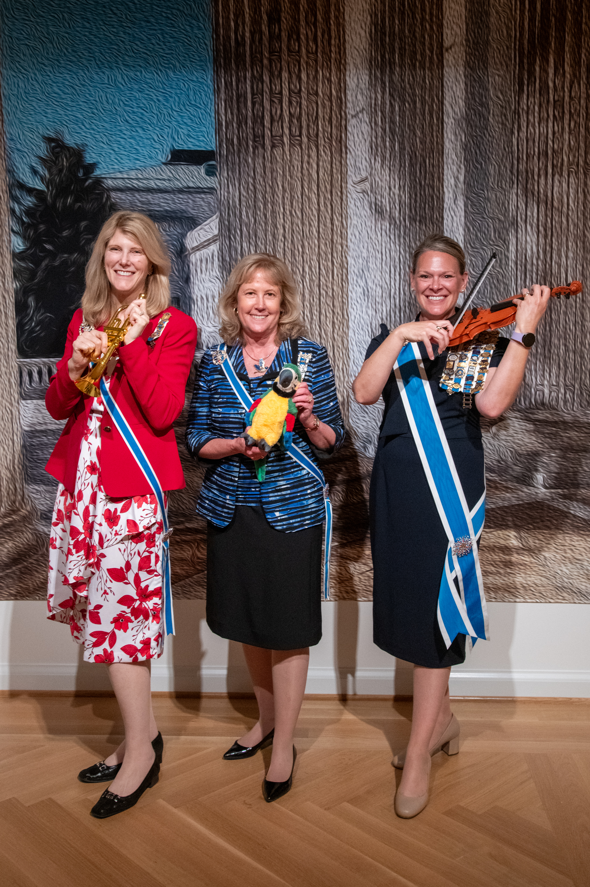
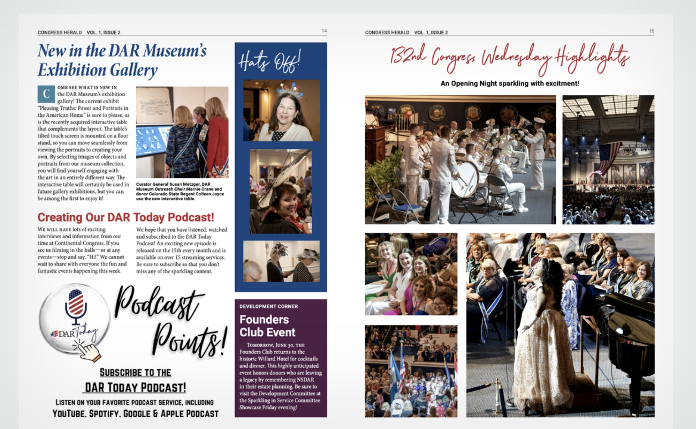
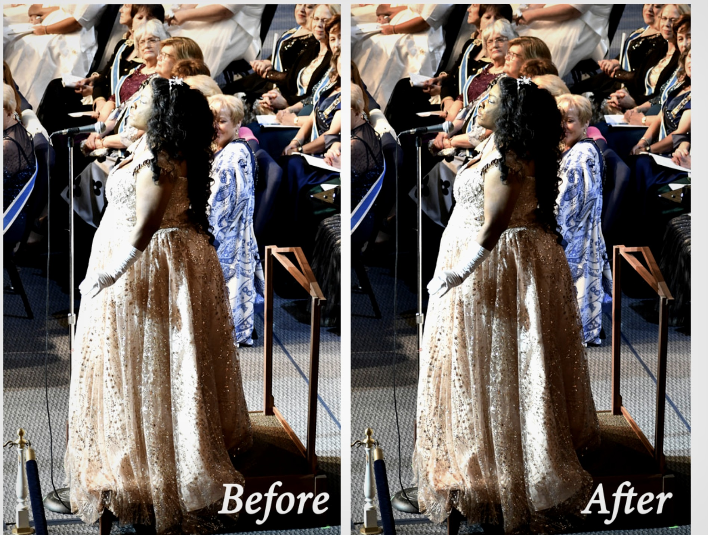

A magazine for a national moment.
The Congress Herald is the official magazine published by the Daughters of the American Revolution during their week-long Continental Congress — one of the most significant annual gatherings in the organization's history. As a lead assistant on the communications committee, the job was to help produce a publication worthy of the occasion.
That meant operating at speed. Congress runs five days, issues drop daily, and everything — copy, layout, ads, photography — has to be sharp, consistent, and done right now.

Polished pages.
Every single day.
Each issue of the Congress Herald needed to feel like a real publication — not a conference handout. Strong editorial hierarchy, clean typographic structure, and purposeful photo layouts made the difference between something people read and something they left on a chair. The content ranged from DAR Museum highlights to committee grants to opening night coverage — all handled with the same care.

Event photography, done right.
Live event photography is rarely perfect straight out of the camera — uneven lighting, mixed color casts, and exposure issues come with the territory. Part of the role was bringing those images up to publication quality through retouching and color correction, so every photo in the magazine looked intentional.
The before/after shown here is from the Congress opening night — the same shot, corrected for skin tones, contrast, and overall balance so it could hold its own on the page.

Print-first. Digital-ready.
The Congress Herald wasn't just a print publication — it also reached members digitally across phone, tablet, and desktop. The same editorial care that went into the print layout had to translate cleanly to screens, ensuring the magazine's polish held up however it was read.
A dedicated digital promotion asset and QR-linked photo gallery — "Relive Every Sparkling Moment" — were also produced as part of the week's communications package, giving attendees a way to access 132nd Congress photography long after the event ended.

Communications at congress speed.
Working on a live event publication means no do-overs. The Congress Herald had to be accurate, professional, and on-brand from the first issue to the last — produced under real deadline pressure with thousands of members reading it each day. Every word, layout decision, and photo choice was a reflection of the organization.